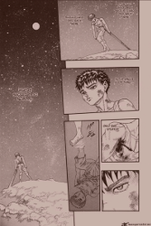
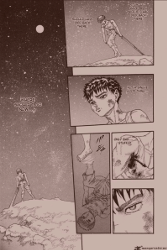
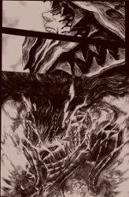
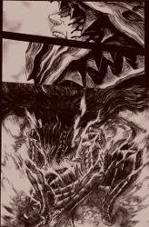

Guts
A Tribute to The Struggler


Guts is a fictional character in the world of the Berserk manga created by Kentaro Miura. He was named a "Struggler" by the mysterious entity, Skull Knight, for his dogged fight against his fate.
- Born from a corpse
- Adopted by a mercenary
- Was a child soldier; grew to become a master swordsman
- Member of the first Band of the Hawks
- Betrayed and branded as a sacrifice by his former friend and commander, Griffith
- Saw his comrades sacrificed to enable Griffith ascend to archdemon-hood
- Survived an eclipse
- Robbed of the chance to be a real father; had his unborn child corrupted by evil resulting in it being born prematurely, a malformed fetus, a reminder of the events of the eclipse
- Carries the Brand of Sacrifice
- Current wearer of The Berserker Armor
- At the present, he waits. At Elfhelm, the land of the elves, the Flower Storm King, using her Hall of Dreams, attempts to repair Casca's mind. Casca, Gut's lover, and according to Guts, "the only person I ever cared about" regressed mentally as a result of being assaulted sexually by Griffith. He's realized protecting Casca is more important to him than revenge on Griffith.
To learn more, read the manga or watch the anime. In the meanwhile, get acquainted with Gut's world:


 



 
